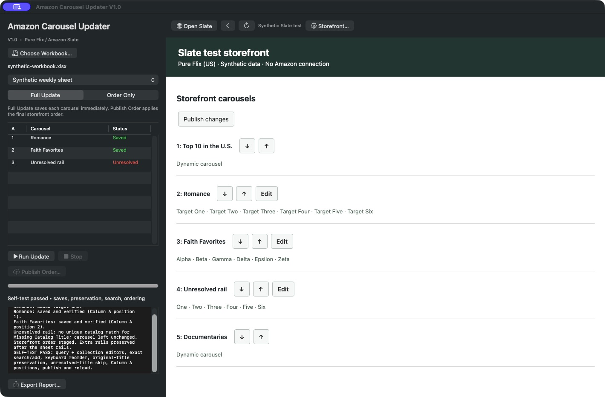

STANDALONE DESKTOP APP
Amazon Carousel Updater
Your weekly spreadsheet. Your Slate storefront.
One app with its own Amazon browser.
V1.2 · macOS 12+ · Apple Silicon + Intel
V1.2 · Windows 10/11 · x64 installer
V1.2 · Mint 21/22 · amd64 .deb
No Codex, Python, or API key required. Amazon Slate access is required.
The app
Desktop controls · Embedded Slate browser
Mac version shown with synthetic test data. Windows and Linux use the same update rules and their own embedded browser. Your workbook stays on your computer.
Install
macOS
Unzip the download and move the app to Applications. Requires macOS 12 or newer.
Windows
Run the .exe installer. Choose an installation folder, then open Amazon Carousel Updater from the Start menu. Requires Windows 10 or 11, 64-bit.
Linux Mint
Open the .deb in Package Installer, then launch the app from the Mint menu. For terminal installation:
sudo apt install ./Amazon-Carousel-Updater-V1.2-Linux-amd64.debTargets standard Ubuntu-based Mint 21.x/22.x on Intel/AMD 64-bit. Not an ARM build. Do not run the app as root or disable its browser sandbox.
From workbook to storefront
- Choose your workbook. Select the visible weekly worksheet.
- Sign in to Slate. Use the app’s private browser session.
- Run the update. Choose full content updates or carousel order only.
- Publish the order. Review the result and confirm the final storefront order.
Two update modes
Full Update adds missing titles and reorders the leading six, preserving existing extras. Each carousel save applies immediately.
Order Only changes storefront carousel order. Top 10 stays first; existing extra rails are preserved.
Private by design
Workbook parsing happens locally. Title searches and updates go to Amazon. Sign-in sessions and reports stay in memory unless you export a report.
Version downloads
Release notes ↗| Version | Platform | Download | Details |
|---|---|---|---|
| V1.2Latest | macOS universal | Mac app (.zip) | Notes & checksum |
| V1.2 | Windows x64 | Windows installer (.exe) | Notes & checksum |
| V1.2 | Linux Mint amd64 | Linux installer (.deb) | Notes & checksum |
| V1.1 | macOS universal | Mac app (.zip) | Notes & checksum |
| V1.0 | macOS universal | Mac app (.zip) | Notes & checksum |
Every shipped edit gets a new version and its own download. Earlier versions remain available.